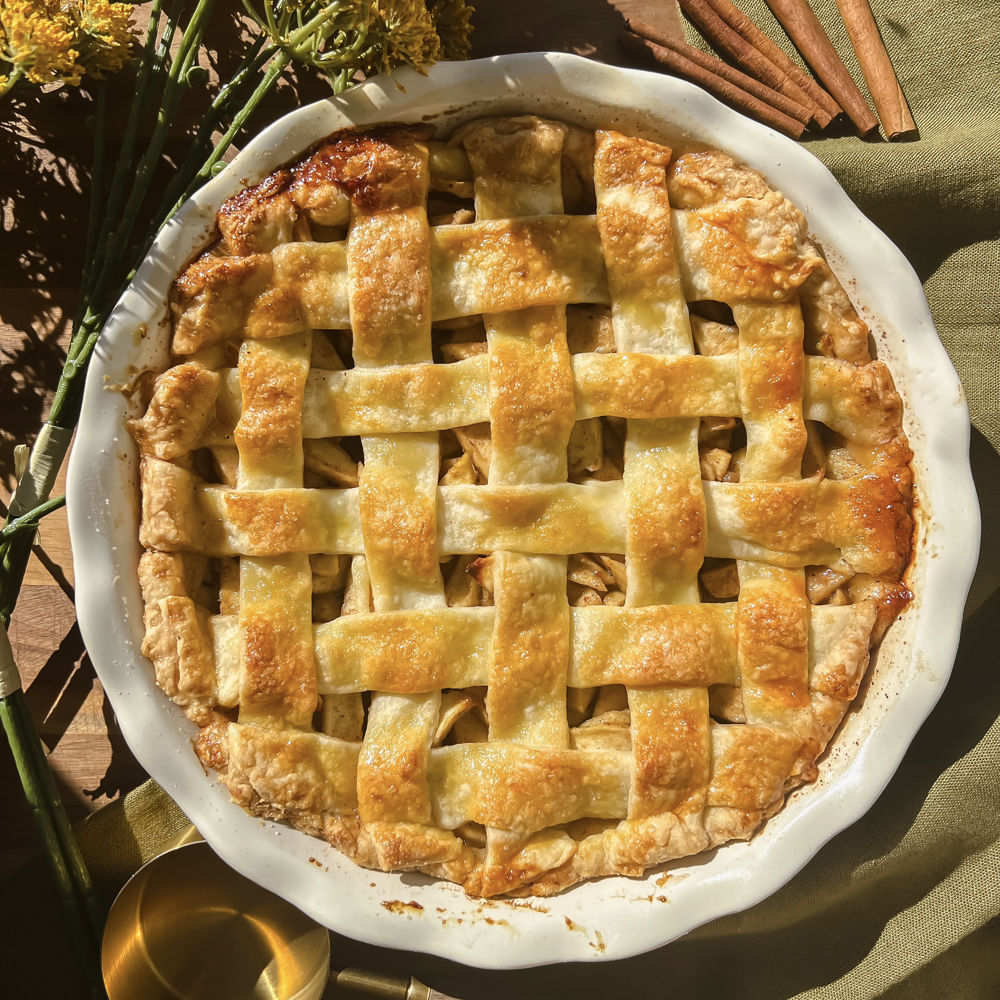

Odin Recipes
Apple Pie
Apple Pie

This is a homemade apple pie in a white round dish. It has a top made of crisscrossed pastry strips that are golden brown. Pieces of cooked apple are visible through the gaps, with a little bit cinnamon. The pie sits on a green cloth with cinnamon sticks, and yellow flowers, making it look warm and inviting.
Ingredients
- 7 to 8 cups peeled, cored, and thinly sliced apples (about 6 to 8 large apples; use a mix of Granny Smith for tartness.)
- ½ cup granulated sugar
- ¼ cup packed light brown sugar
- ¼ cup all-purpose flour
- 1 teaspoon ground cinnamon
- ¼ teaspoon ground nutmeg (optional, but adds warmth)
- 1 tablespoon fresh lemon juice
- Pinch of salt
- 1 to 2 tablespoons unsalted butter, cut into small pieces
For the crust and assembling
- 2 (9-inch) pie crusts (homemade or store-bought; one for bottom, one for top)
- 1 egg, beaten with 1 tablespoon water (for egg wash)
- Optional: Coarse sugar for sprinkling on top
Steps
- Preheat the oven to 425°F (220°C). Position a rack in the lower third of the oven for best browning on the bottom crust.
- Prepare the apples — Peel, core, and thinly slice the apples (about ¼-inch thick). Place them in a large bowl and toss immediately with the lemon juice to prevent browning.
- Make the filling — In the bowl with the apples, add the granulated sugar, brown sugar, flour, cinnamon, nutmeg (if using), and salt. Toss everything together until the apples are evenly coated and no dry spots remain. Let it sit for 10 to 15 minutes so the apples release some juices (this helps thicken the filling).
- Assemble the pie — Roll out (or unroll) one pie crust and fit it into a 9-inch pie plate, letting excess hang over the edges. Spoon the apple filling into the crust, mounding it slightly in the center (it will shrink as it bakes). Dot the top with the small pieces of butter.
- Add the top crust — Roll out the second crust. You can place it whole over the filling (cut slits for vents), make a lattice top by weaving strips, or do a simple cut-out design. Trim excess dough, crimp or flute the edges to seal, then brush the top with the egg wash. Sprinkle with coarse sugar if desired.
- Bake the pie — Place the pie on a baking sheet (to catch drips). Bake at 425°F for 15 minutes to set the crust, then reduce heat to 375°F (190°C) and bake for another 40 to 50 minutes, until the crust is deep golden brown and the filling is bubbling thickly through the vents. If the edges brown too quickly, cover them with foil or a pie shield.
- Cool and serve — Let the pie cool on a wire rack for at least 2 to 3 hours (ideally 4+ for cleaner slices) so the filling sets. Serve warm or at room temperature.